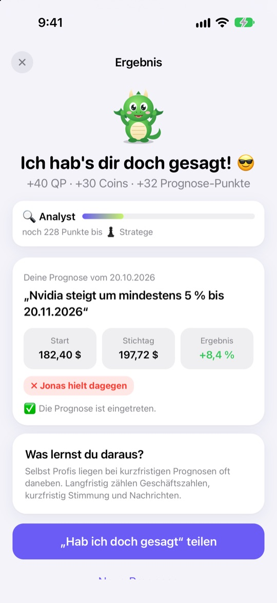

Grundlagen
Kann man Aktienkurse vorhersagen? Was Prognosen leisten
Jeden Dezember erscheinen neue Jahresprognosen für den DAX. Wie verlässlich sind sie, und was lernst du, wenn du selbst Prognosen abgibst?

Die kurze Antwort: Kurzfristig lassen sich Aktienkurse kaum verlässlich vorhersagen. Über lange Zeiträume gibt es Tendenzen, etwa dass breite Aktienmärkte in der Vergangenheit gestiegen sind, aber auch das ist keine Garantie. Wer das versteht, geht gelassener mit Prognosen um und fällt seltener auf große Versprechen herein.
Warum kurzfristige Prognosen so schwer sind
- Bekanntes ist schon im Kurs. Sobald eine Information öffentlich ist, handeln sehr viele Marktteilnehmer darauf. Der Kurs passt sich schnell an. Bewegen kann ihn dann vor allem das, was noch niemand weiß.
- Überraschungen sind nicht planbar. Quartalszahlen, Zinsentscheide, politische Ereignisse: Was davon morgen den Kurs bewegt und in welche Richtung, weiß heute niemand sicher.
- Kurzfristig dominiert Rauschen. An einem einzelnen Tag spielen Stimmung, Zufall und große Orders eine große Rolle. Ein einziger Tag sagt wenig über das Unternehmen aus.
- Märkte lernen mit. Funktioniert eine einfache Regel zuverlässig, nutzen sie viele. Dadurch verschwindet ihr Vorteil oft wieder.
Und die Experten?
Banken und Analysten veröffentlichen jedes Jahr Kursziele für den DAX und für einzelne Aktien. Sie liegen oft weit auseinander, und viele treffen am Ende nicht zu. Selbst Profis mit großen Teams und viel Rechenleistung können die Zukunft nicht sehen. Seriöse Prognosen nennen deshalb Spannen und Szenarien statt einer einzigen Zahl. Ein Kursziel ist eine begründete Einschätzung, kein Versprechen.
Was Charttechnik und Fundamentalanalyse leisten
- Fundamentalanalyse fragt, was ein Unternehmen wert ist: Gewinne, Wachstum, Verschuldung, Bewertung. Sie hilft eher bei langfristigen Entscheidungen als bei der Frage, was morgen passiert.
- Charttechnik sucht wiederkehrende Muster im Kursverlauf, etwa Chartmuster und Kerzenmuster. Muster zeigen Wahrscheinlichkeiten, keine Gewissheiten. Fehlsignale sind häufig.
Beide sind Werkzeuge, um Risiken einzuschätzen, keine Kristallkugel. Entscheidend ist, was passiert, wenn die Einschätzung falsch ist. Dafür gibt es Stopps, das Chance-Risiko-Verhältnis und eine passende Positionsgröße.
Was du trotzdem aus Prognosen lernst
Selbst Prognosen abzugeben, schärft das Denken, wenn du sie ehrlich auswertest:
- Vorher aufschreiben: Was erwartest du, bis wann, und warum? Ohne feste Aufzeichnung erinnert man sich später gern an die Treffer.
- In Wahrscheinlichkeiten denken: „Eher steigend“ ist eine bessere Aussage als „steigt sicher“.
- Trefferquote messen: Bei Ja-Nein-Prognosen liegt Raten bei ungefähr 50 %. Erst über viele Prognosen zeigt sich, ob du deutlich darüber liegst oder nur Glück hattest.
- Fehler auswerten: Lag es an einer Nachricht, an der Stimmung oder an einem Denkfehler? Daraus lernst du am meisten.
Prognosen üben ohne Geld
In InQuestly gibst du Prognosen ab, ohne Geld einzusetzen. Gewertet wird mit echten Schlusskursen, und die App zählt deine Trefferquote mit. Im Prognose-Dezember gibt es an jedem Börsentag eine neue Tagesprognose, zum Beispiel zum DAX, zu Bitcoin oder zu Gold. In Prognose-Duellen trittst du gegen Freunde an. Wie Börsenspiele im Allgemeinen funktionieren und wo sie an Grenzen stoßen, steht im Artikel Börsenspiel ohne Risiko. Was hinter dem DAX steckt, erklärt der Artikel Was ist der DAX?.
Häufige Fragen
Kann man den DAX für morgen vorhersagen?
Nicht verlässlich. Kurzfristig bewegen Nachrichten, Stimmung und Zufall den Index stark. Wer eine Tagesprognose abgibt, sollte mit vielen Fehlern rechnen und die Trefferquote über viele Tage betrachten.
Kann künstliche Intelligenz Aktienkurse vorhersagen?
KI kann Muster in großen Datenmengen finden, aber auch sie sieht keine Zukunft. Märkte passen sich an, und Überraschungen bleiben unvorhersehbar. Vorsicht bei Angeboten, die sichere Gewinne durch KI versprechen.
Was ist eine gute Trefferquote bei Prognosen?
Bei Steigt-oder-fällt-Prognosen liegt Raten bei etwa 50 Prozent. Erst über viele Prognosen wird sichtbar, ob jemand dauerhaft besser liegt, und auch dann können Glück und Marktphase eine Rolle spielen.
Sind Kursziele von Analysten verlässlich?
Kursziele sind begründete Einschätzungen, die oft danebenliegen. Sie helfen, die Argumente zu verstehen, ersetzen aber keine eigene Prüfung.
Ist eine Prognose dasselbe wie eine Wette?
Eine Prognose ist eine Einschätzung. In InQuestly gibt es dabei kein echtes Geld, nur Punkte. Wer mit echtem Geld auf kurzfristige Bewegungen setzt, trägt echtes Risiko bis zum Totalverlust.
Wie kann ich Prognosen ohne Risiko üben?
Zum Beispiel mit der Tagesprognose in InQuestly: jeden Tag eine Einschätzung abgeben, mit echten Schlusskursen auswerten und die eigene Trefferquote verfolgen.
Dieser Artikel dient der Bildung und ist keine Anlageberatung. Beispiele sind vereinfacht und ohne Steuern dargestellt.